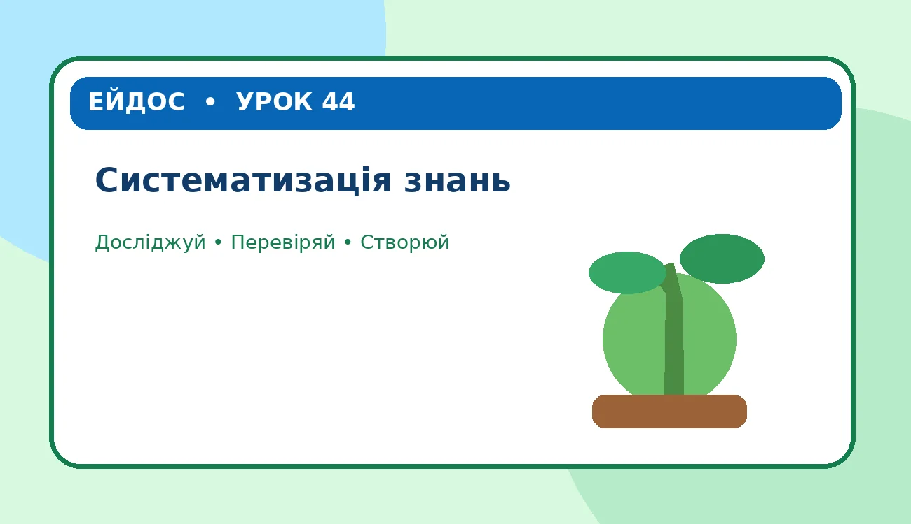

Урок 44
Систематизація знань
Дослідіть тему, перевірте припущення, створіть мініпроєкт і збережіть свої відкриття.
Розпочати урок →
Виконано 0 із 7 місій
🔎 1. Подумайте та оберіть
Що пов’язано з темою «рослина»? Позначте всі правильні варіанти.
🧩 2. Поєднайте поняття
Натисніть поняття, а потім його пояснення. Також можна перетягнути картку.
🧪 3. Віртуальний дослід: умови розвитку
Змініть два параметри. Спочатку зробіть припущення, потім запустіть модель.
Змініть умови досліду.
🧠 4. Перевірте причинно-наслідковий зв’язок
Що станеться, якщо умови стануть несприятливими? Оберіть найкраще пояснення.
🌱 5. Дослідницьке рішення
Оберіть дії, які допоможуть дослідити тему або подбати про природу.
🎨 6. Мініпроєкт «Моя карта знань»
🏆 7. Перевірте себе
Що є необхідним для рослин?
✨ Підсумок уроку
Збережіть свій дослідницький звіт і роздивіться великий плакат уроку.